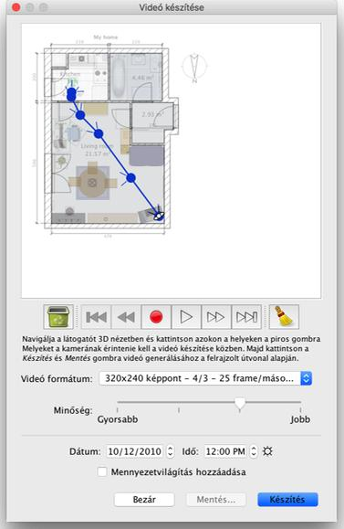

| Videó készítése | |||
Ha 3D videót szeretne készíteni az otthonról, válassza a 3D nézet > Videó készítése... menüpontot vagy a 3D Videó készítése eszközt.
Ekkor egy, a Fotó készítéséhez hasonló panel jelenik meg.  Az ablak tetején az otthon alaprajza látható, ezen fog látszani a kamera általá bejárandó út. Az alaprajz alatt a felvétel, lejátszás és törlõ gombok segítségével lehet rögzíteni a kamera által bejáradó pontokat, visszajátszani a megteendõ útvonalakat, vagy eltávolítani szükségtelen pontokat az útvonalból.
Videó készítéséhez elõször válassza ki a kamera kiindulópontját a Sweet Home 3D fõablak 3D nézetében, és nyomja meg a piros gombot a videó készítés oldalon. Majd mozgassa a nézetet a következõ helyre, és ismét kattintson a piros gombra. Ismételje ezeket a lépéseket, amíg minden pontot hozzá nem adott, melyet a kamerának érintenie kell a videó készítése során. |
|